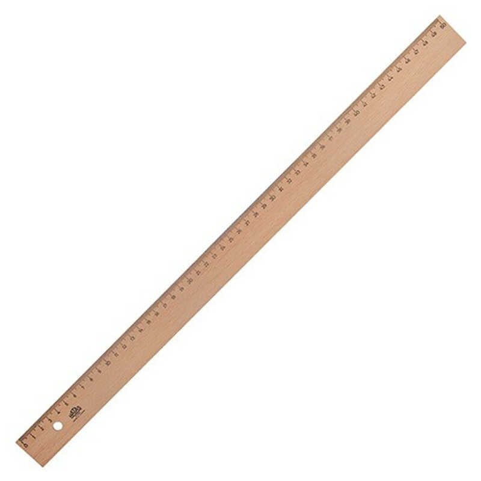
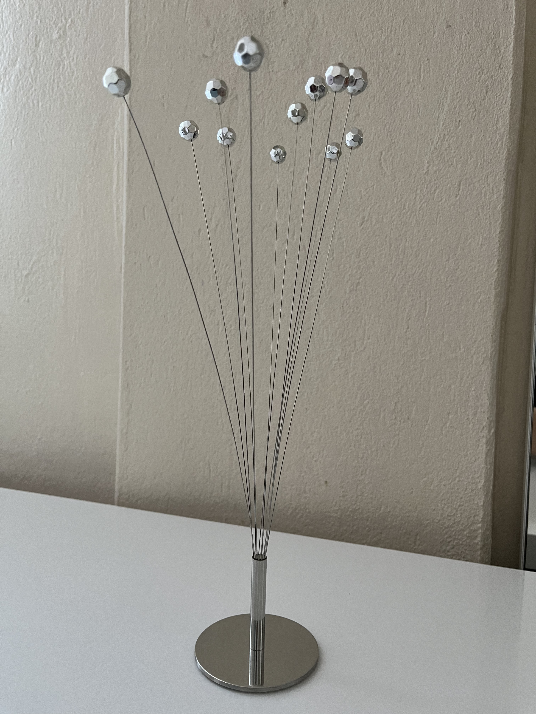
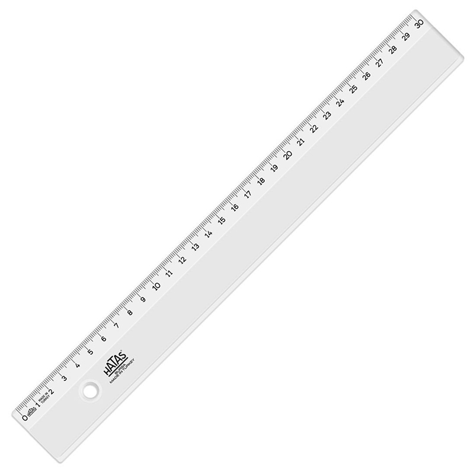
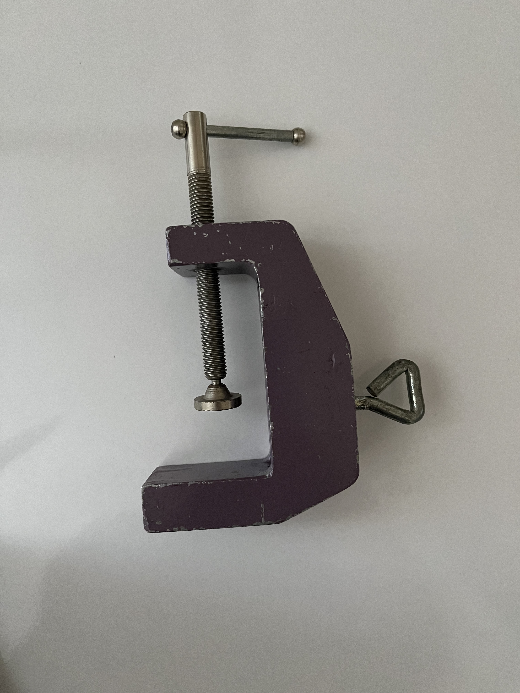

Bilim yapmak; ister çocuk olsun ister bilimin sınırlarında araştırma yapan biri olsun, temelde aynı yöntemle çalışmaktadır. Herkes bilim yaparak, farklı düzeylerde araştırma yoluyla bilgi edinme sücrecine tanıklık edebilir. Erken yaşlarda çocuklarda bilim uğraşı; genel anlamda çocukların kendilerinin de içinde var olduğu doğayı ve yaşamı doğru algılamalarına ve anlamalarına yöntemsel olarak destek olmaktır (Yürümezoğlu & Karabey, 2020). Rezonans, dışarıdan gelen ve küçük genlikle titreşen bir etmenin, sistemin serbest halde titreşeceği frekansa denk gelerek, sistemi kararlı bir durumda büyük genlikle titreşmeye zorladığı bir durumdur. (Chen et al., 2025)
Rezonans olgusunun algılanmasının zor olması sebebiyle çeşitli deneylere gerek duyulur. Bu deneylere örnek olarak 'Yerinden Zıplatan Deneyler', 'Bir Metronomun Rezonans Yoluyla Bir Sarkacı Titreşime Geçirmesi' deneyleri verilebilir.
Hazırlamış olduğum deney de Rezonansın gözlemlenmesine imkan tanıyan bir deneydir.
Tahta Cetvel
İkea Ev Süsü
Plastik Cetvel
Mengene
Bu videolarda salınımın 50 cm cetvel uzunluğu için nasıl değiştiği gözlemlenebilir.
Bu videolarda salınımın 40 cm cetvel uzunluğu için nasıl değiştiği gözlemlenebilir.
Bu videolarda salınımın 30 cm cetvel uzunluğu için nasıl değiştiği gözlemlenebilir.
Bu videolarda salınımın 20 cm cetvel uzunluğu için nasıl değiştiği gözlemlenebilir.